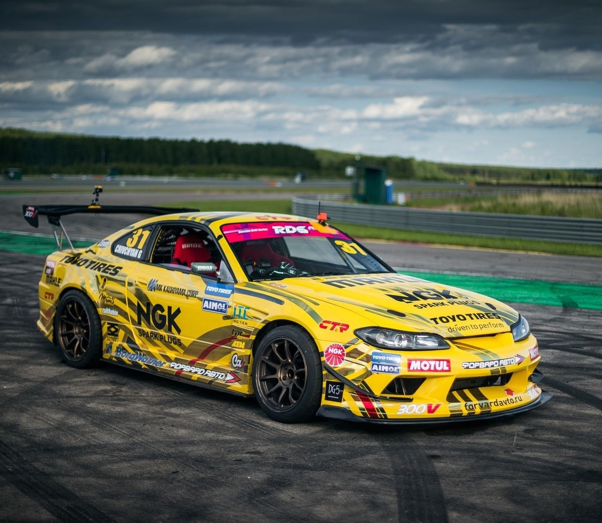
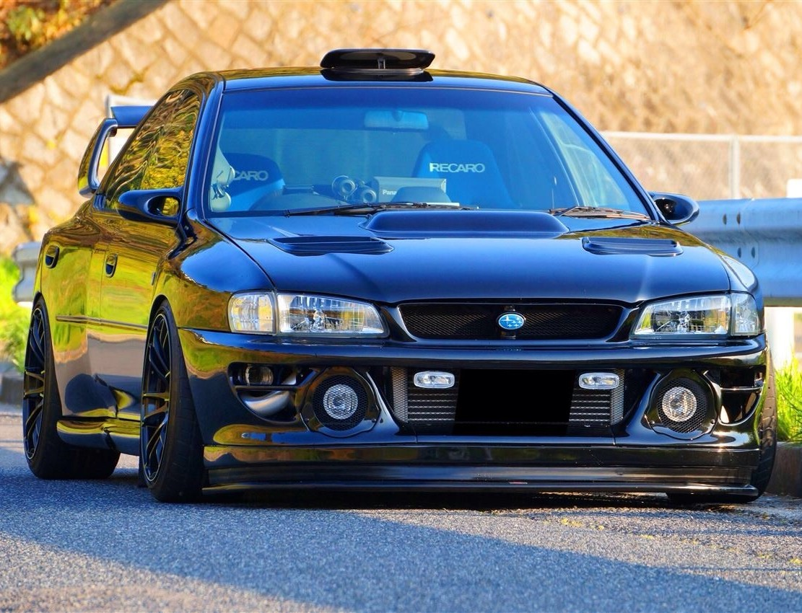
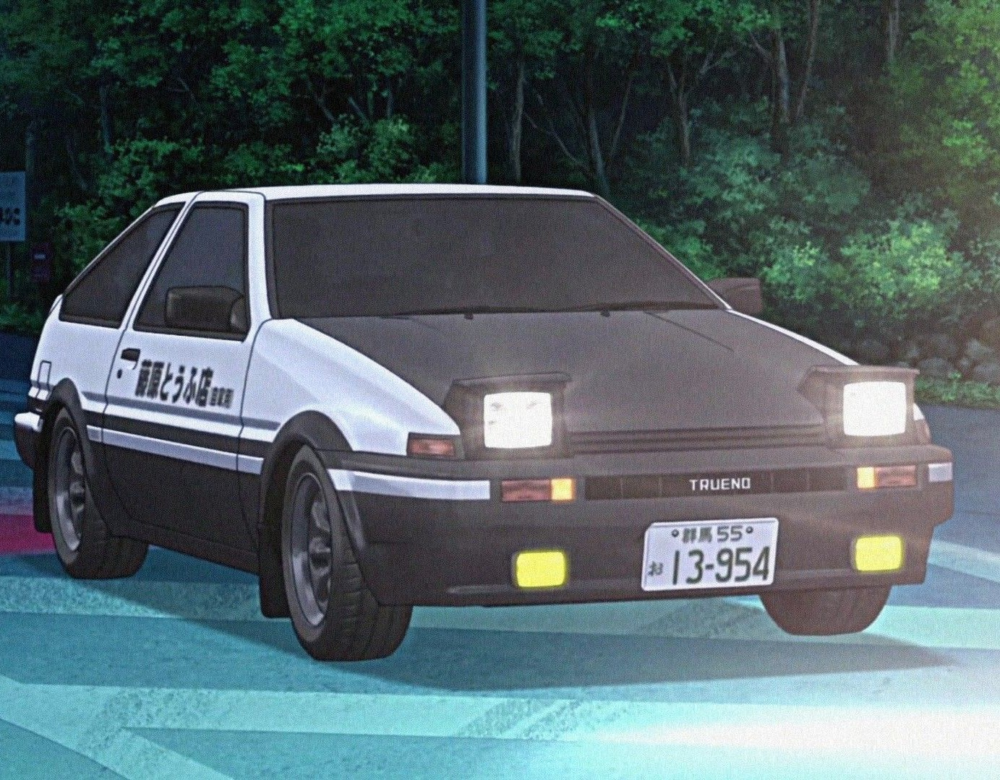

Характеристики автомобилей
1. Mercedes-AMG GT Black Series (2020-2022)
Технические характеристики:
Двигатель: 4.0L V8 Bi-Turbo (M178 LS2)
 Мощность: 720 л.с. @ 6700-6900 об/мин
Мощность: 720 л.с. @ 6700-6900 об/мин
Крутящий момент: 800 Нм @ 2000-6000 об/мин
Разгон 0-100 км/ч: 3.2 сек
Макс. скорость: 325 км/ч (электронный ограничитель)
Трансмиссия: 7-ступ. AMG SPEEDSHIFT DCT
Привод: Задний (с активным дифференциалом)
Вес: 1540 кг
Аэродинамика: Активное антикрыло (до 400 кг прижимной силы)
Эксклюзивные технологии:
Углеволоконная крыша и капот
Многорежимная магнитореологическая подвеска
Титановая выхлопная система
Специальные шины Michelin Pilot Sport Cup 2 R
2. Nissan Silvia S15 (1999-2002) с двигателем BMW B58
Донорские характеристики (S15):

Родной двигатель: 2.0L SR20DET (турбо)
После тюнинга (B58): 3.0L I6 Twin-Turbo (520 л.с.)
Трансмиссия: ZF 8HP (8-ступ. автомат от BMW)
Дифференциал: Кастомный LSD Drexler
Развесовка: 52:48 (после замены двигателя)
Тормоза: Brembo GT 6-поршни спереди
Ключевые доработки:
Усиленный подрамник
Кастомные полуоси
Перепрошивка ECU (отсечка при 7200 об/мин)
Углеволоконные передние крылья (+30 мм)
3. Subaru Impreza WRX STI (2007-2014 GR/GV)
Спецификация раллийной версии:

Двигатель: 2.5L EJ25 Boxer Turbobr
Мощность: 300 л.с. (до 550 л.с. в Stage 3)
Система полного привода: DCCD с ручной
Подвеска: Регулируемые амортизаторы EXE-TC
Защита: Стальной каркас безопасности FIA
Топливная система: Два насоса Walbro 450
Особенности для гравия:
Увеличенный клиренс (+50 мм)
Защита днища из 3мм стали
Система очистки стекла "Rain Fighter"
Дополнительные фонари Cibie
4. Toyota Sprinter Trueno AE86 (1983-1987)
Параметры "Фудживара-версии":

Двигатель: 4A-GEU 1.6L (после доработок)
Выходная мощность: 150 л.с. @ 7800 об/мин
Вес: 940 кг (облегченная версия)
КПП: T50 5-ступ. (с близкими передаточными числами)
Дифференциал: TRD LSD 2-way
Тормоза: Celica GT-Four 4-поршни спереди
Секретные настройки:
Угол развала передний: -3.5°
Давление в шинах: 1.8 кг/см² (перед), 2.2 кг/см² (зад)
Вырез в воздухозаборнике для охлаждения тормозов
5. Porsche 911 GT3 RS (991.2, 2018-2019)
Трек-ориентированные параметры:
 Двигатель: 4.0L Flat-6 (9000 об/мин красная зона)
Двигатель: 4.0L Flat-6 (9000 об/мин красная зона)
Мощность: 520 л.с. @ 8250 об/мин
Аэродинамика: 409 кг прижимной силы при 200 км/ч
Тормоза: PCCB (керамические, 410 мм)
Вес: 1430 кг (сухой)
Колеса: Центральные крепления (сзади 325/30 R21)
Профессиональные фишки:
Кнопка "Push-to-Pass" (+15 л.с. на 20 сек)
Система смазки с сухим картером
Титановые шаровые опоры подвески
Воздушные каналы в задних крыльях
Сравнительные характеристики гоночных автомобилей
| Модель | Разгон 0-100 | Вес (кг) | Прижимная сила | Стоимость обслуживания/год |
|---|---|---|---|---|
| Mercedes-AMG GT Black Series | 3.2 с | 1540 | 400 кг | ~$35,000 |
| Nissan Silvia S15 (B58) | 3.9 с | 1260 | Нет данных | ~$12,000 |
| Subaru WRX STI (гравий) | 4.5 с* | 1390 | Нет данных | ~$18,000 |
| Toyota AE86 (тюнинг) | 7.8 с | 940 | 150кг | ~$5,000 |
| Porsche 911 GT3 RS | 3.0 с | 1430 | 409 кг | ~$28,000 |
| *На гравийном покрытии | ||||
.jpg)